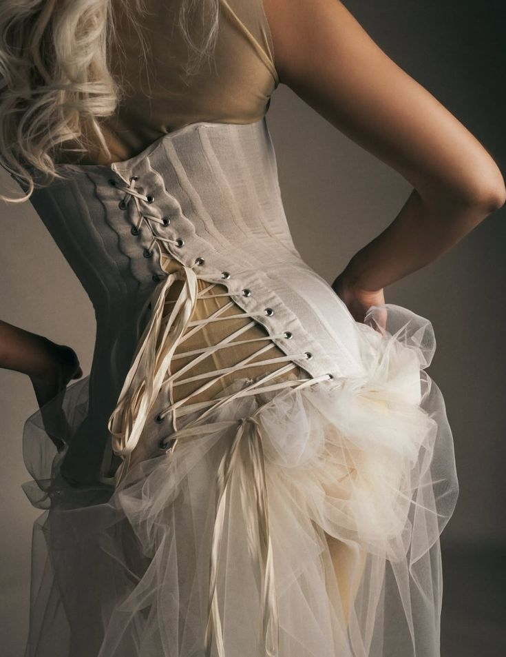
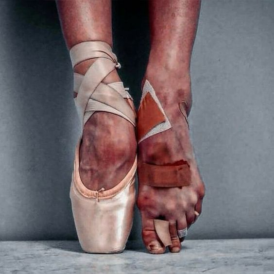
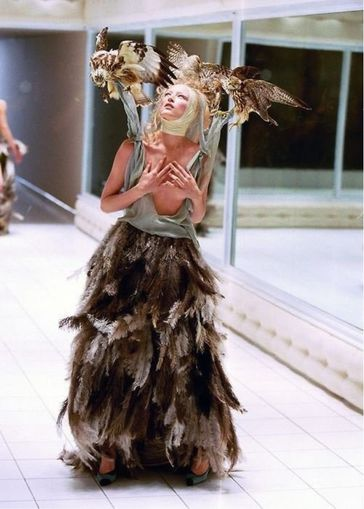
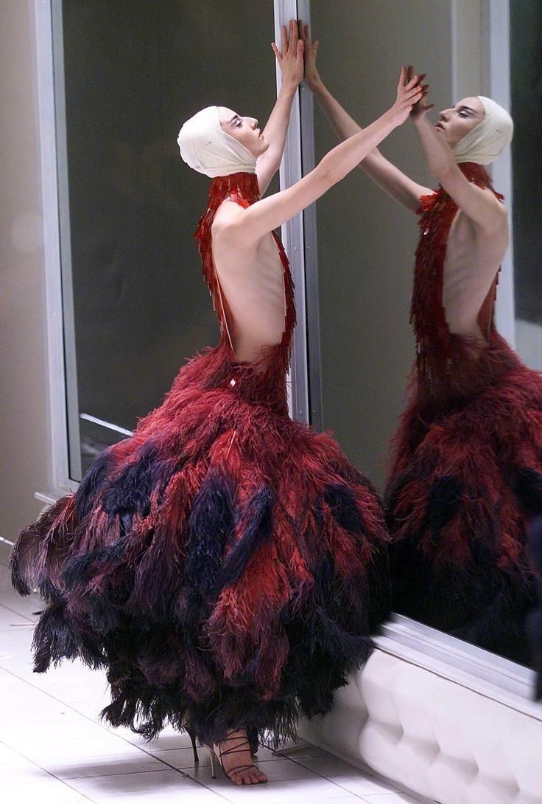
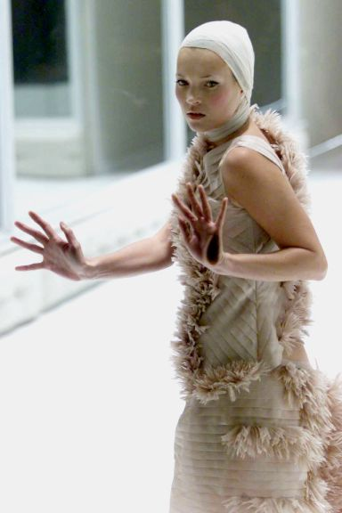
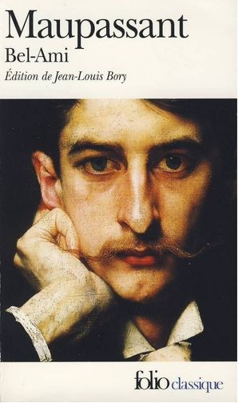

ACT II
Tragic Devotion
L’apparence, entre expression de soi et regard des autres. Une exploration de cette volonté de façonner son image, jusqu’à parfois chercher à correspondre à un idéal qui ne nous ressemble pas.
THE BODY
À travers les siècles, le corps a souvent été modelé pour correspondre à un idéal. La beauté peut alors devenir une discipline : on ne porte plus seulement le vêtement, on accepte ce qu’il impose au corps.


BEAUTY IN CAPTIVITY
Avec VOSS, Alexander McQueen transforme le défilé en expérience troublante. Derrière les miroirs et l’apparente perfection, le corps devient prisonnier du regard des autres.



Further Explorations
Gian Lorenzo Bernini, 1621 - 1622
Thomas Couture, 1847

Guy de Maupassant, 1885
“N’ayez pas peur de la perfection, vous ne l’atteindrez jamais.”
—
Salvador Dalí
—
Salvador Dalí